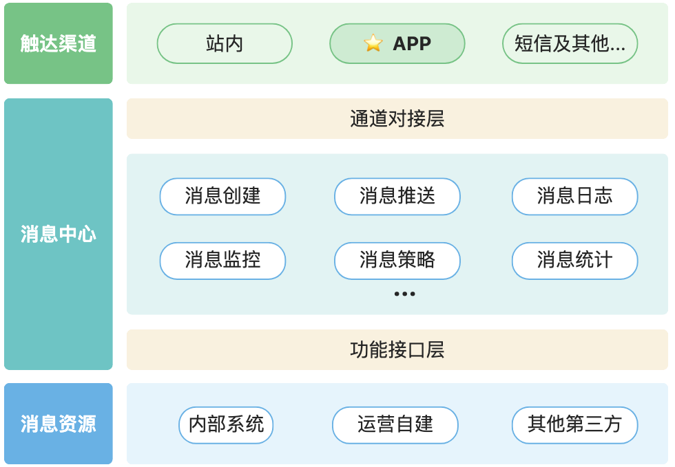
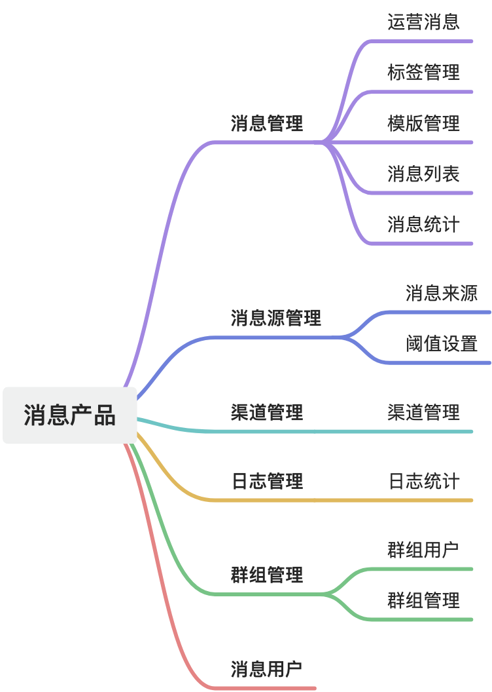
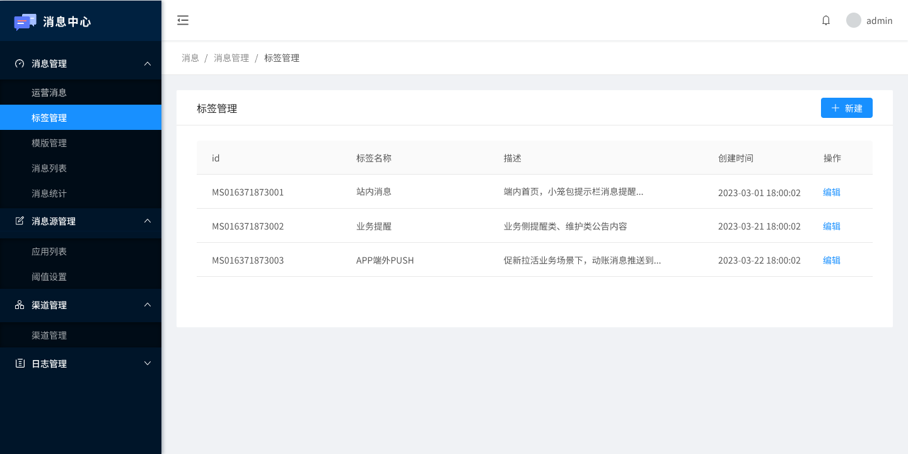
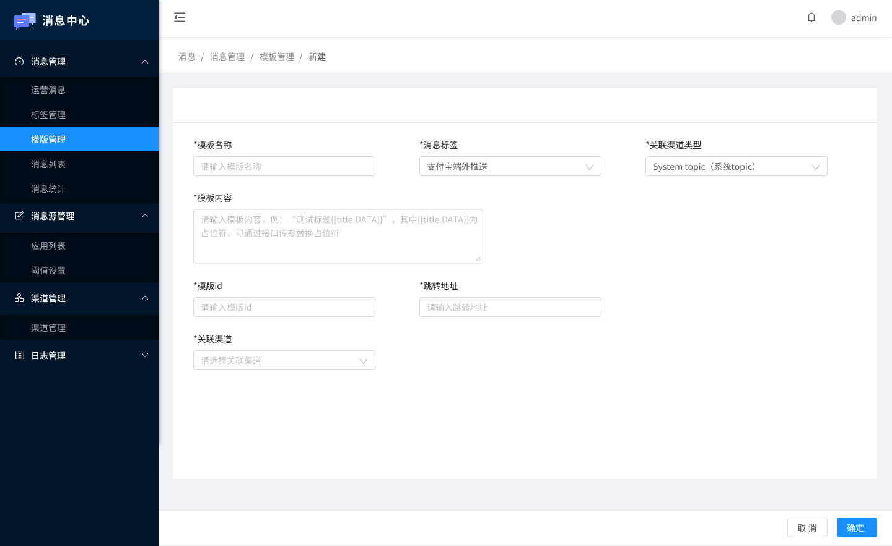
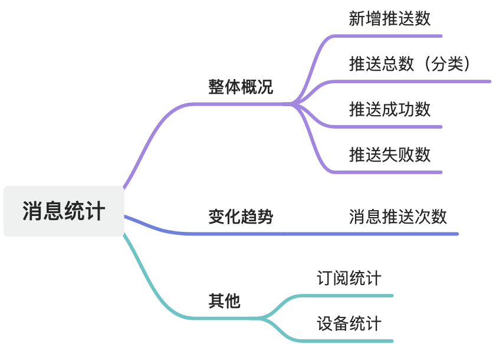
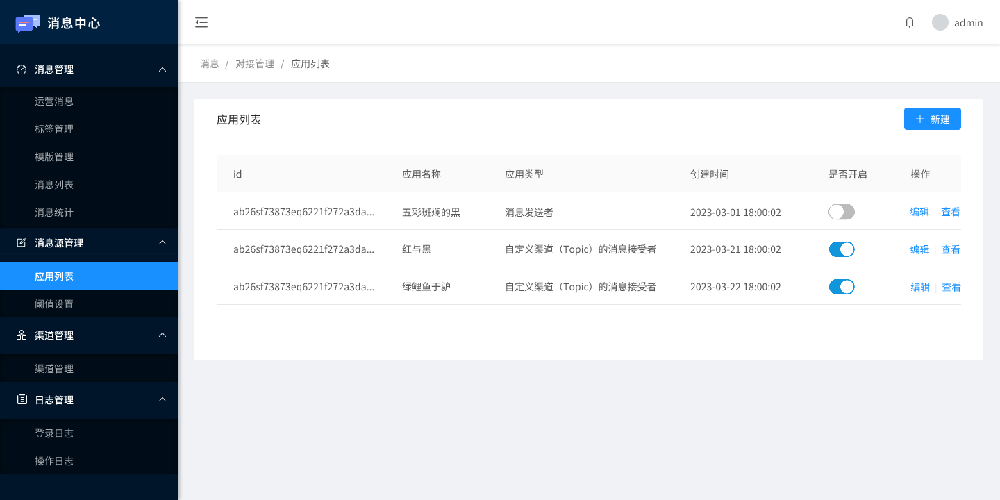
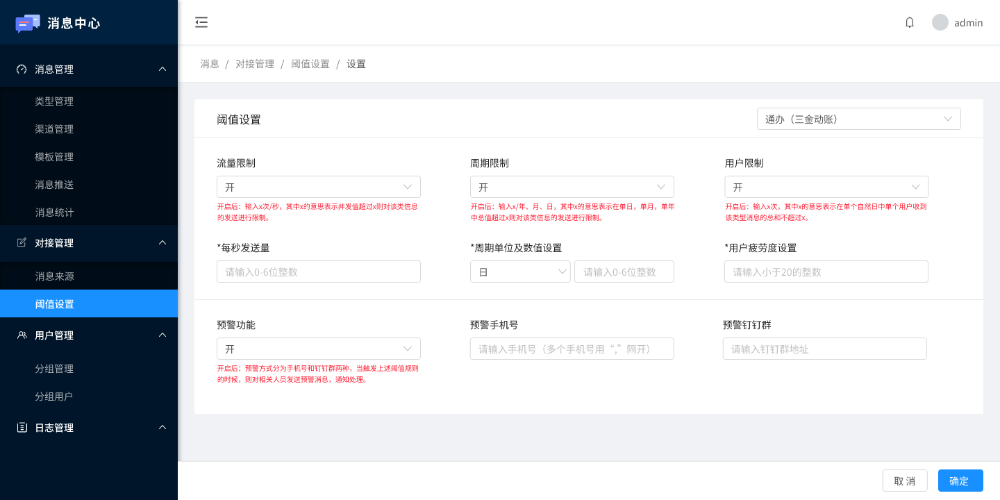
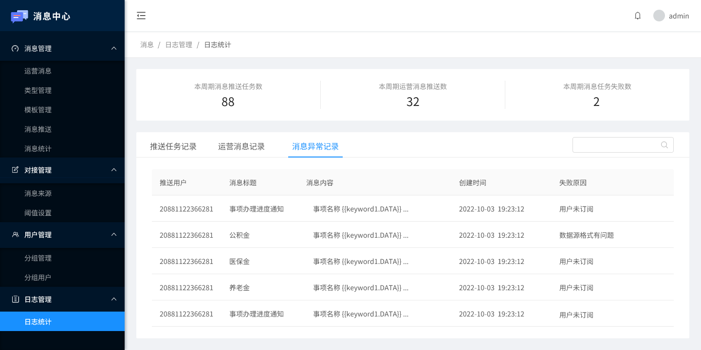

消息触达能力是实现业务闭环和重要组成部分，但在实际业务开展当中，很多组织因为前期没有做统一的产品规划，没有考虑功能的复用性和合理性，各产品按分割的业务的需求进行设计，没有合理利用自身的资源，导致自主消息能力很薄弱。
为了进一步优化营运阶段的业务深度，提升服务效率，往往需要通过整合和管理多元化消息通知业务，构建云原生的、高性能的、高可用的消息中心，以实现业务增长、数据活跃的目的。
一、基础业务结构

结构概述
核心功能层：主要包括了消息创建、消息推送、消息配置、消息日志、消息监控、消息任务调度、对接管理、用户群组等功能。
功能接口层：功能接口层以统一的标准提供给需要发送消息的信息渠道源，例如：创建消息任务、查询消息、更新消息、取消消息等。通过标准的功能服务接口，需要发送消息的应用系统只需要关注接口的功能，而不需要关注具体消息发送的实现细节，进一步做到不同对接体系下系统间的解耦。
通道适配层：通道适配层支持所有消息类型的发送要求，可针对不同渠道设置、管理、配置对应的消息推送模板，可以提高消息发送通道的灵活性和扩展性。
二、功能设计

1. 消息管理
1）运营消息
① 写消息
写消息模块编辑消息的信息，包括：选择消息模板、添加消息标题、选择消息发送的渠道、选择消息推送方式、选择消息推送时间、填写模板内容详细信息。可选择发送消息或者将消息暂存在草稿箱，发送的消息会在收件箱以及消息推送模块中展示。
② 草稿箱
草稿箱模块保存用户编辑但未发送的消息，展示用户保存消息的时间、消息内容、消息模板、渠道类型、渠道名称、推送方式、推送时间、推送用户，可再次进入消息编辑页面，对消息内容进行修改，也可以删除草稿箱中的消息。
③ 发件箱
发件箱模块展示发送消息的内容、消息模板、渠道类型、渠道名称、推送时间、推送用户、推送结果（成功数/失败数）、查看消息详细信息、删除发件信息。点击查看按钮展示发送信息详细状态，展示用户姓名、账号以及推送状态，消息推送失败后可再次推送。
2）标签管理

标签管理主要是方便消息后台使用者自己对消息类型进行打标签，方便后续数据统计。
3）模版管理

对模版进行增删改查等操作，新增模板时，可选择APP模板，短信模板、微信模板、钉钉模板、邮箱模板、小程序模板、PC模板。且可根据不同渠道“定制”消息模板样式，如文本样式，图片样式，图文样式，信息流样式，强提醒样式和自定义样式等多消息展示样式。
4）消息列表
在待推送区域中，若推送消息选择定时推送，那么待推送的消息会展示在此列表。在已推送中可以查看已经推送的消息，其中，app、微信、支付宝小程序的消息推送前会有标识符设定，有标识符代表用户未读信息，没有的表示已读。若消息推送失败，可在此处查看原因以及重新发送，推送成功的消息无法重新发送。
5）消息统计

消息统计模块的设计规划，可根据自身的业务情形和运营侧或相关业务部门的具体要求进行落地。
2. 消息源管理

消息源管理中主要是管理消息平台对接的第三方，包括会给平台推消息的“消息发送者”，也可以是“消息接受者”。
第一类来源三方消息推送源头列表，新建来源后需要单独和消息源做接口对接，封装接口接收消息源推送过来的消息，然后根据自身消息推送策略完成消息转发推送。第二类是自定义渠道道的消息接受者，需要关联渠道。
消息来源阈值设置，是对接入的三方消息来源进行安全设置，阈值设置可以从以下角度进行规划和实施控制：流量限制、周期限制、用户限制、预警功能。

4. 渠道管理
主要管理消息PUSH可配置送达的渠道，在后台做可视化的展示和渠道开启关闭的限制，后续有消息实例消费转化时会根据开关状态决定是否完成触达，这里更多的是做展示，每个渠道触达的通道还是需要定制化开发去实现的。
5. 日志管理

消息日志记录着消息从创建至结束的全生命周期过程，便于对日志过程及结果的查询和统计分析。
三、总结
定制开发消息后台产品，开发功能展示界面，是在特定场景下，为完成业务融合而产生的特殊需要。开发这样一个后台产品，需要使用到较多的基础设施资源，例如：前端服务、后端服务集群、SLB、推送代理服务器、单点登录服务、PUSH服务、消息策略服务等。
从资源的角度上来讲，需要较多的服务器，从功能开发对接的角度来看，封装接口接收三方消息源推送的消息、对接消息推送渠道、整合消息转发能力、支持后台自定义编辑消息推送功能等模块也需要较多的人力资源成本。
综上可见，如果不是业务上确切需要，或者只是单纯需要做某些单一渠道PUSH能力的话，完全可以利用市面上较为成熟的商业化平台产品，而且还能集成相关的前端SDK，省时省心省力。